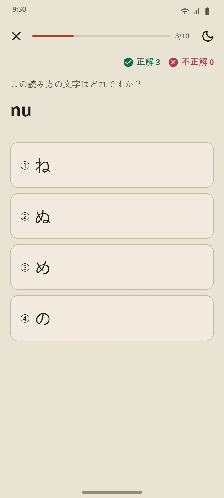

そのままレッスン一覧になる表
ひらがなとカタカナのページは、ホーム画面の「日本語の基礎」コーナーから開きます。上のまとめカードは覚えた文字の数を数え、その下の表は 3 つのグループに分かれています：清音（46 字）、濁音・半濁音、拗音（きゃ、しゅ、ちょ など）。マスが塗られていれば覚えた、枠だけなら学習中です。

行ごとに一つのレッスン
表の行一つがレッスン一つです：タップすると音が出る文字のマス、ローマ字、覚えた印、全文字の筆順、そして「読める単語」。その行までに習った文字だけでできた辞書の実際の単語で、まず自分で読めるように、ローマ字はボタンの奥に隠れています。「この行をクイズ」ボタンでレッスンをしめくくります。

読みのルール
各表の最後のグループでは、初心者がつまずきやすいルールを説明します：ひらがなの小さい っ と長音、カタカナの長音符 ー、小さい ッ、外来語の組み合わせ（ファ、ティ、ウィ）。どのルールにも、読める例語があります。
10 問のクイズ、復習の予定なし
かなのクイズは、文字からローマ字、ローマ字から文字、音から文字の 3 種類です。3 回続けて正解するとその文字は覚えたになり、まちがえると学習中に戻ります。単語や漢字と違い、文字には復習の予定がありません。全部読めるようになれば、その表は完了です。クイズのまとめには、スコア、新しく覚えた文字、まちがえた文字が表示されます。

どこから始めるか
アプリを初めて開くと、ゼロから始めるのか、ひらがなはもう読めるのかを聞かれます。答えに合わせて、ホーム画面に提案が一つ出ます：初心者には「ひらがなから始める」、それ以外の方には最初の 20 語。こなすべきチェックリストはありません。同じカードから全機能の短いチュートリアルに進め、いつでも閉じられます。